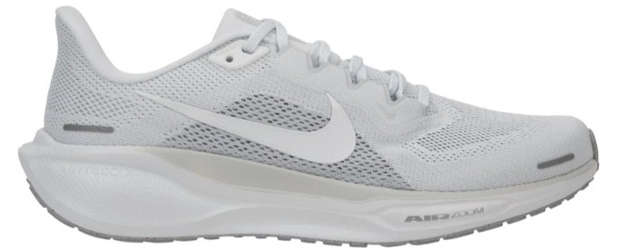
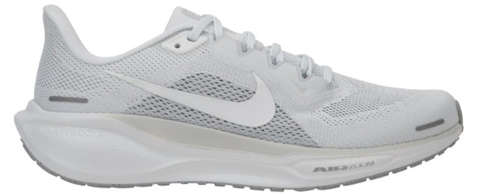

러닝 입문자들을 위해 대중적이고 러닝 입문화로 알려진 5개의 러닝화를 소개하겠습니다.
프롬프트를 러닝 전문가로 설정한 생성형 AI가 알려주는 각각의 러닝화의 기능과 장점, 단점까지 소개해드리도록 하겠습니다.
FF BLAST™ PLUS ECO. 이전 모델의 폼을 재활용 소재를 혼합하여 경량성과 탄성을 유지하며 지속 가능성을 더했습니다. 부드러움과 반응성의 훌륭한 균형을 제공합니다.
트램폴린 효과. 미드솔의 하부 구조를 트램폴린처럼 설계하여 착지 시 압축된 폼이 폭발적인 반발력으로 되돌아오게 합니다.
엔지니어드 우븐(Woven) 메쉬. 통기성과 신축성이 뛰어나 발을 편안하게 감싸주며, 특히 중족부(발의 중간) 지지력을 강화하여 안정감을 높였습니다.
8mm. 대부분의 러너에게 익숙하고 편안한 드롭으로, 힐(Heel) 착지부터 미드풋(Midfoot) 착지까지 자연스러운 주행 전환을 돕습니다.
뛰어난 반발력과 주행 재미: FF BLAST PLUS ECO 폼은 매우 통통 튀는 느낌을 제공하여, 러닝에 활력을 불어넣고 지루하지 않은 경험을 선사합니다. 평범한 조깅도 경쾌하게 만들어 줍니다.
데일리 트레이너로서의 범용성: 가벼운 조깅(Recovery Run)부터 페이스를 올리는 템포 훈련(Tempo Run)까지 소화할 수 있는 충분한 쿠셔닝과 반응성을 갖추고 있어, 단 한 켤레의 신발로 다양한 훈련을 커버할 수 있습니다.
향상된 안정성: 초기 노바블라스트 모델은 불안정하다는 피드백이 있었지만, 5세대에서는 미드솔의 베이스를 넓히고 어퍼의 지지력을 개선하여 주행 안정성을 크게 끌어올렸습니다.
착용감과 통기성: 새로운 우븐 메쉬 어퍼는 발에 부드럽게 밀착되면서도 통기성이 우수하여 장거리 훈련 시에도 쾌적함을 유지합니다.
최대 속도 훈련의 한계: 폭발적인 추진력을 위한 카본 플레이트가 없으므로, 전문적인 레이싱(마라톤 기록 단축)용 신발만큼의 최고 속도를 내기는 어렵습니다.
여전히 요구되는 적응 기간: 안정성이 개선되었더라도, 일반적인 아식스의 안정화(예: Kayano)에 비하면 여전히 쿠션의 높이가 높고 부드러워, 발목 안정성이 약한 러너에게는 여전히 적응 기간이 필요할 수 있습니다.
젖은 노면 접지력: 아웃솔의 내구성은 좋지만, 일부 러너들은 비가 오거나 젖은 노면에서 접지력(Traction)이 살짝 아쉽다는 평가를 하기도 합니다.
 

페가수스 시리즈 최초로 ReactX 폼이 적용되었습니다. 이전 React 폼 대비 더 가벼우면서도 에너지 리턴(반발력)이 13% 이상 향상되어, 효율적이고 반응성 좋은 쿠셔닝을 제공합니다.
전족부와 후족부에 각각 하나씩 Air Zoom 유닛이 삽입되어 있습니다. 이는 착지 시 충격을 효과적으로 흡수하고, 발을 밀어낼 때 즉각적인 추진력을 제공하는 핵심 기술입니다.
통기성과 내구성을 갖춘 새로운 디자인으로, 발을 편안하고 안전하게 잡아주며 특히 중족부의 지지력을 강화하여 안정적인 착화감을 제공합니다.
기본적인 설계는 과도한 내전이나 외전을 교정하지 않는 중립 러너를 위해 디자인되었으며, 우수한 안정성 덕분에 경미한 내전 주자도 착용할 수 있습니다.
혁신적인 에너지 리턴: ReactX 폼의 도입으로 40세대까지의 페가수스가 다소 '단단하다'고 느꼈던 러너들에게 훨씬 더 경쾌하고 탄력적인 주행감을 제공합니다. 데일리 트레이너 중 최고 수준의 반발력 향상입니다.
검증된 내구성과 안정성: 페가수스 시리즈의 가장 큰 강점입니다. 튼튼한 아웃솔(밑창)과 안정적인 플랫폼으로 훈련 중 마일리지(주행 거리)를 쌓는 데 최적화되어 있으며, 신발의 수명이 긴 편입니다.
범용적인 활용도: 느린 회복 조깅, 중간 페이스의 데일리 런, 그리고 약간의 스피드 훈련까지 소화할 수 있는 전천후(All-around) 신발입니다. 어떤 날씨나 어떤 훈련 환경에도 믿고 신을 수 있습니다.
편안하고 안전한 착화감: 발목 주변의 패딩과 개선된 어퍼 디자인 덕분에 발을 안정적으로 고정시켜주며, 장시간 착용에도 불편함이 적습니다.
무게: ReactX 폼으로 경량화가 이루어졌지만, 전문 레이싱화와 비교하면 여전히 쿠셔닝과 내구성을 위해 무게가 어느 정도 나가는 편이므로, 기록 단축을 위한 극단적인 경량화를 원하는 러너에게는 적합하지 않습니다.
통통 튀는 느낌은 약함: 같은 나이키의 줌X 폼이나 아식스의 FF BLAST PLUS ECO 폼처럼 극도로 부드럽고 '말랑거리는' 느낌을 기대하는 러너에게는 다소 실망스러울 수 있습니다. 페가수스 41은 여전히 '안정적인 탄성'에 더 가깝습니다.
발목 안정성 교정 부족: 과도한 내전 성향을 가진 러너에게는 충분한 지지력을 제공하지 못할 수 있습니다. 이러한 러너는 안정화 모델을 고려해야 합니다.
NITRO™ (나이트로 폼). 질소를 주입하여 만든 폼으로, 굉장히 소프트하고 말랑말랑한 느낌이 있으면서도 반발력이 좋고 탱글탱글한 느낌을 동시에 제공합니다. 단단한 미드솔을 선호하지 않는 러너에게 적합합니다.
경량성. 중량이 225g밖에 되지 않는 경량 러닝화입니다 (남성 270mm 기준 추정). 이는 데일리 트레이너 중에서도 매우 가벼운 편에 속합니다.
PUMAGRIP (푸마 그립). 푸마의 자체 개발 고무 아웃솔입니다. 접지력과 안정감이 굉장히 인상적이며, 악천후에도 좋은 접지력을 제공하는 것으로 알려져 있습니다.
중립 (Neutral). 부드러운 주행감과 최적의 쿠셔닝을 제공하는 중립 러닝화로 설계되었습니다.
압도적인 경량성: 데일리 트레이너의 기능을 하면서도 무게가 225g 수준으로 매우 가볍습니다. 가벼운 무게 덕분에 속도를 내는 훈련에도 어색함 없이 경쾌한 주행감을 느낄 수 있습니다.
뛰어난 쿠셔닝과 반발력: 나이트로 폼 자체가 소프트함과 탱글탱글한 반발력의 조화가 뛰어나 다양한 속도에서 쿠션 작용을 제대로 해줍니다. 폼의 퀄리티가 향상되어 달리고 싶은 대로 달릴 수 있는 인상을 줍니다.
최상급 접지력: PUMAGRIP 아웃솔의 접지력과 안정감이 매우 인상적입니다. 접지력이 좋아 날씨가 좋지 않은 날씨에도 믿고 신을 수 있습니다.
편안한 착용감: 설포(신발 혀)의 길이가 최적이며, 끝부분이 부드럽게 마감되어 달릴 때 발목을 치는 경우가 거의 없습니다. 발볼 토박스(발가락 부분)가 상당히 넓어서 발볼러들에게도 이 부분이 넉넉하게 느껴질 수 있습니다.
중족부 핏의 호불호: 발볼 토박스는 넉넉하지만, 발 중간 부분(중족부, Mid-foot)이 좁게 느껴진다는 의견이 있습니다. 이로 인해 발등 높이가 낮은 경우 신발 안쪽 공간이 좁아져 신발 끈(슈레이스)을 느슨하게 풀어야 할 수도 있습니다.
장거리 훈련 시 쿠션 감소: 미드솔이 상대적으로 얇고 유연한 편이라, 거리가 늘어날수록 쿠션의 작용이 감소한다는 느낌을 받을 수 있습니다 (약 10km 초반을 지났을 때).
일자형 어퍼 디자인: 엄지발가락 쪽이 어퍼 안쪽에 계속 닿는 일자 타입의 디자인이어서 이 부분에 불편함을 느낄 수 있습니다.
MIZUNO ENERZY (미즈노 에너자이). 미즈노의 차세대 폼인 에너자이가 적용되어, 기존 EVA 폼 대비 향상된 부드러움과 준수한 반발력을 제공합니다. 러닝 입문자에게 필요한 충격 흡수에 강점을 보입니다.
장시간 착용 및 워킹. 러닝뿐만 아니라 일상에서의 워킹, 장시간 서 있는 활동 등 다목적으로 활용할 수 있도록 설계된 전천후 모델입니다.
안정적인 플랫폼. 쿠셔닝 폼의 높이가 지나치게 높지 않으며, 신발의 베이스가 넓어 착지 시 발이 흔들리는 것을 최소화하여 입문자에게 필요한 안정성을 제공합니다.
통기성 메시 소재. 부드럽고 통기성이 좋은 엔지니어드 메시 소재를 사용하여, 발에 압박을 주지 않으면서 쾌적하게 유지해 줍니다.
뛰어난 충격 흡수 (입문자 최적): 러닝 입문자는 지면 충격에 익숙하지 않기 때문에, 에너자이 폼을 통해 무릎과 관절에 가해지는 부담을 효과적으로 줄여줍니다. 부상 방지에 최적화된 쿠셔닝입니다.
가격 대비 성능 (가성비): 미즈노의 핵심 기술인 에너자이 폼을 적용했음에도 불구하고, 플래그십 모델(Wave Rider 등) 대비 가격 접근성이 뛰어나 처음 러닝화를 구매하는 소비자에게 좋은 선택지가 됩니다.
다목적 활용성: 러닝화의 기능에 충실하면서도 일상복에도 잘 어울리는 디자인과 편안함 덕분에, 운동과 일상생활에서 모두 활용 가능한 범용성이 높습니다.
안정적인 착화감: 발볼 너비가 보통 이상으로 넉넉하게 나오는 경향이 있어, 발볼이 넓은 러너도 편안함을 느끼며, 입문자에게 중요한 발의 뒤틀림을 최소화하는 구조를 갖추고 있습니다.
속도 훈련의 한계: 네오 젠은 '속도'나 '반발력'보다는 '쿠셔닝'과 '안정성'에 중점을 둔 모델입니다. 따라서 본격적으로 페이스를 올리는 템포 런이나 인터벌 훈련에는 적합하지 않으며, 주행감이 무겁게 느껴질 수 있습니다.
무게 (상대적): 경량화를 극대화한 신발은 아니므로, 가벼운 레이싱화에 익숙한 러너에게는 상대적으로 무게감이 느껴질 수 있습니다.
(저는 미즈노 네오젠과 경량 러닝화로 유명한 아디다스 아디제로 EVO SL을 신고 있는데 네오젠도 쿠셔닝이 좋다고 느껴서인지 모르겠으나 충분히 가볍다고 느껴집니다.)
미드솔의 역동성 부족: 플래그십 모델들처럼 부드러운 쿠션과 폭발적인 반발력을 모두 제공하는 하이엔드 폼은 아니므로, 러닝에 '재미'와 '역동성'을 추구하는 중급 러너에게는 주행감이 다소 밋밋하게 느껴질 수 있습니다.

EVA 기반의 압축 성형 폼. 가볍고 내구성이 우수하며, 시간이 지나도 쿠션 성능이 비교적 오래 유지되는 표준적인 재료입니다.
데이터 기반 육각형 구조. 미드솔 표면에 다양한 크기와 모양의 육각형(Hexagon) 또는 벌집 모양(Honeycomb) 패턴을 적용합니다. 이 패턴은 압력 지도를 분석하여 충격이 많이 가해지는 곳은 오목하게(충격 흡수), 추진력이 필요한 곳은 볼록하게(반발력) 설계합니다.
매우 광범위. 입문용(Arishi), 데일리 트레이너(880), 맥스 쿠셔닝(1080), 그리고 트레일 러닝화까지 뉴발란스의 거의 모든 쿠셔닝 모델에 적용됩니다.
Fresh Foam X. 프레시폼의 최신 버전으로, 향상된 쿠셔닝과 더 높은 반발력, 그리고 경량성을 제공하여 폼의 성능을 한 단계 업그레이드했습니다.
일관된 쿠셔닝과 안정성: 데이터 기반 설계 덕분에 발이 착지하고 이륙하는 과정 전반에 걸쳐 예측 가능하고 일관된 쿠셔닝을 제공합니다. 이는 특히 장거리 러닝이나 장시간 착용 시 피로 누적을 줄이는 데 효과적입니다.
우수한 범용성 (다양한 선택지): 프레시폼은 단일 폼이 아니라 플랫폼입니다. 러너는 자신의 필요에 따라 극도의 부드러움(예: 1080)이나 적절한 지지력(예: 880) 중에서 선택할 수 있습니다.
높은 내구성: EVA 기반 폼 중에서도 내구성이 좋은 편에 속하여, 미드솔이 쉽게 뭉개지지 않고 러닝화 수명이 긴 편입니다. 데일리 트레이너로서 마일리지를 쌓기에 적합합니다.
부드러운 주행감: 프레시폼의 특징은 발이 지면에 닿을 때 충격을 부드럽게 흡수하는 데 있습니다. 딱딱한 지면에서 느껴지는 불쾌한 충격 없이 편안한 주행을 선호하는 러너에게 만족도가 높습니다.
최고 수준의 반발력은 아님 (Fresh Foam X 이전): 초기 프레시폼 모델들은 부드러움에 치중한 나머지, 아디다스의 부스트(Boost)나 나이키의 줌X(ZoomX)처럼 폭발적으로 튀어나가는 듯한 극도의 반발력은 부족하다는 평가를 받았습니다. (최신 Fresh Foam X는 이 부분을 크게 개선했습니다.)
무게 (맥스 쿠셔닝 라인): 1080과 같은 맥스 쿠셔닝 모델은 두꺼운 미드솔로 인해 가볍지 않습니다. 러너가 속도를 중요하게 생각하거나 경량화를 원한다면, 프레시폼 대신 FuelCell 라인(뉴발란스의 고성능 폼)을 선택해야 할 수 있습니다.
'통통 튀는' 재미 부족: 일부 러너들은 부드럽고 안정적인 주행감이 오히려 '재미없다'거나 '밋밋하다'고 느낄 수 있습니다. 신발이 주행을 이끌어주기보다는 러너의 움직임을 보조하는 느낌이 강합니다.